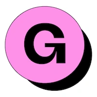
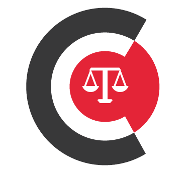
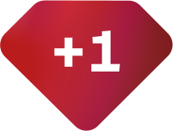
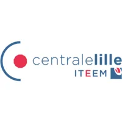

I’m a software engineer at Circle, working on payments. Over the past 10+ years, I’ve built web products, led technical projects, and mentored engineers. I orchestrate AI workflows from investigation and specs through implementation and review. That lets me ship faster than ever and spend more of my time building products, with less spent writing code by hand.
I work on checkout, subscriptions, paywalls, and access to paid content.

Led frontend modernization and shipped billing and fraud detection features in Gumroad’s open-source codebase.
Redesigned investment allocation for deals before and after token launch. Selected InfluxDB for price history and improved code quality through reviews and refactoring.
Built search and analytics for music rights holders, including searches based on natural-language descriptions and similar compositions.
Helped bring development in-house as the business expanded to multiple practices. Recruited the Head of Product and Technology and 2 senior developers, set engineering processes, and led web and mobile work.
Built web and mobile features for a healthcare product, integrated third-party services, and improved data protection as the company worked toward HIPAA certification.
Automated transcription workflows and built a subtitle editor for audio content.
Helped launch the V2 platform and introduced Kanban and cross-team processes.

First salaried developer. Built scheduling, dashboards, and automated invoicing. Introduced Agile/Lean practices and mentored a junior engineer as the company grew from 3 founders to 34 people.

Mentor aspiring engineers through Ruby exercises, projects, code review, and career guidance.
Payments and subscription billing, Stripe, Ruby on Rails, React, TypeScript, search and analytics, AI tools, specifications, code review, and agent workflows.
Glint G2: Signal, WhatsApp, and HEY on Even G2 glasses, with voice replies.
Parkour Paris: class registration, scheduling, and payments.
Ruby tools: grape-jsonapi · activerecord-deepstore · activemodel-caching · provet-client

Engineer Manager Entrepreneur, ITEEM, École Centrale de Lille (2007 to 2012)English, French, and Portuguese